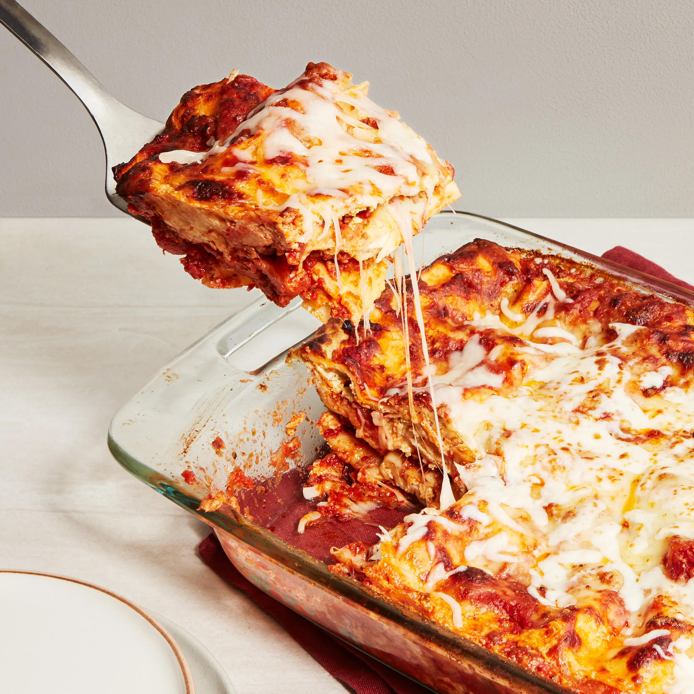

Home
Lasagna

Description:
Lasagna is a classic Italian comfort food made with layers of pasta, rich meat sauce, creamy béchamel, and melted
cheese. It's the perfect dish for feeding a crowd and tastes even better the next day.
Ingredients:
- 12 lasagna noodles
- 500g ground beef
- 1 onion, diced
- 3 cloves garlic, minced
- 800g crushed tomatoes
- 2 tbsp tomato paste
- 250g ricotta cheese
- 300g mozzarella, shredded
- 50g parmesan, grated
- 2 tbsp olive oil
- Salt, pepper and Italian seasoning to taste
Steps:
- Preheat the oven to 190°C
- Cook the lasagna noodles according to package instructions
- Heat olive oil in a pan, add onion and garlic and cook until soft
- Add ground beef and cook until browned
- Stir in crushed tomatoes and tomato paste, season and simmer for 20 minutes
- Spread a layer of meat sauce on the bottom of a baking dish
- Layer noodles, ricotta, meat sauce and mozzarella, repeat until all ingredients are used
- Top with remaining mozzarella and parmesan
- Cover with foil and bake for 25 minutes, then uncover and bake for another 15 minutes
- Let rest for 10 minutes before serving